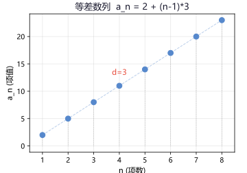
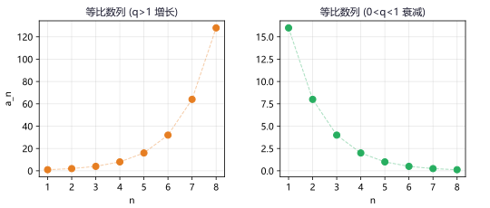
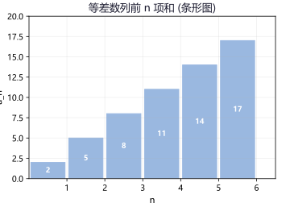
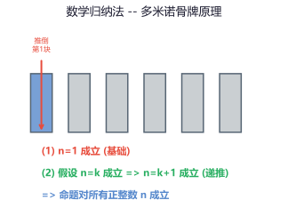

专题一：数列的概念与通项公式
数列基础
数列的定义：按一定次序排列的一列数叫做数列。数列中的每一个数叫做数列的项，第 n 项记作 aₙ。数列一般形式：a₁, a₂, a₃, …, aₙ, …，简记为 {aₙ}。
数列的分类：按项数分为有穷数列（项数有限）和无穷数列（项数无限）。按变化趋势分为递增数列（aₙ₊₁ > aₙ）、递减数列（aₙ₊₁ < aₙ）、常数列（aₙ₊₁ = aₙ）和摆动数列（项的大小交替变化）。
通项公式：如果数列 {aₙ} 的第 n 项 aₙ 与序号 n 之间的关系可以用一个式子表示，那么这个式子叫做数列的通项公式。求通项公式的常见方法：观察法（观察项与序号的关系）、公式法（已知等差/等比直接写）、由前n项和求（aₙ = S₁ (n=1)；aₙ = Sₙ − Sₙ₋₁ (n≥2)）。
递推公式：已知数列首项（或前几项），且数列的任一项 aₙ 与它的前一项 aₙ₋₁（或前几项）之间的关系可以用一个式子表示，这个式子叫做递推公式。递推公式+初始条件→数列被唯一确定。
例 1：数列 {aₙ} 的前 n 项和 Sₙ = n² + 2n，求通项公式 aₙ。
解：n=1 时，a₁ = S₁ = 1 + 2 = 3。
n≥2 时，aₙ = Sₙ − Sₙ₋₁ = (n²+2n) − [(n−1)²+2(n−1)]
= (n²+2n) − (n²−2n+1+2n−2) = (n²+2n) − (n²−1) = 2n + 1。
验证 n=1：2×1+1=3，与 a₁ 一致。∴ aₙ = 2n + 1（n∈N*）
例 2：写出下列数列的一个通项公式：① 1, 3, 5, 7, … ② 2, 5, 10, 17, … ③ ½, ¼, ⅛, ¹⁄₁₆, …
解：
① aₙ = 2n − 1（奇数列）
② 观察：2=1²+1, 5=2²+1, 10=3²+1, 17=4²+1 → aₙ = n² + 1
③ 观察：½=(½)¹, ¼=(½)², ⅛=(½)³ → aₙ = (½)ⁿ = 1/2ⁿ
例 3：已知 a₁ = 1, aₙ₊₁ = 2aₙ + 1（n∈N*），求 a₅。
解：a₂ = 2×1+1 = 3，a₃ = 2×3+1 = 7，a₄ = 2×7+1 = 15，a₅ = 2×15+1 = 31
• 数列 {aₙ} 满足 a₁ = 2, aₙ₊₁ = aₙ + 2n，求 a₄ 答案：8
• Sₙ = 3ⁿ − 1，求 aₙ 答案：aₙ = 2·3ⁿ⁻¹
• 数列 1, 0, 1, 0, … 的一个通项公式 答案：aₙ = ½[1+(−1)ⁿ⁻¹] 或 aₙ = sin(nπ/2)
专题二：等差数列
等差数列
定义：从第二项起，每一项与它的前一项的差等于同一个常数，这个数列叫做等差数列，这个常数叫做公差 d。
即：aₙ₊₁ − aₙ = d（常数，n∈N*）。
等差中项：若 a, A, b 成等差数列，则 A 叫做 a 与 b 的等差中项，且 2A = a + b（即 A = (a+b)/2）。
通项公式：aₙ = a₁ + (n−1)d。
重要变形：aₙ = aₘ + (n−m)d（从第 m 项开始推导第 n 项）。
前 n 项和公式：
① Sₙ = n(a₁ + aₙ)/2（已知首项和末项，梯形面积形式）
② Sₙ = na₁ + n(n−1)d/2（已知首项和公差）
常用性质：
① 若 m + n = p + q，则 aₘ + aₙ = aₚ + a_q（特别地，若 m + n = 2k，则 aₘ + aₙ = 2a_k）
② 数列 {aₙ} 是等差数列 ↔ aₙ = kn + b（即 aₙ 是 n 的一次函数）↔ Sₙ = An² + Bn（无常数项）
③ 等差数列的连续等长片段 S_k, S₂ₖ−S_k, S₃ₖ−S₂ₖ, … 仍成等差数列。
④ 若 {aₙ} 是等差数列，则 {paₙ + q} 也是等差数列。

等差数列 aₙ = 2 + (n−1)·3 的各点呈线性排列，公差 d=3
例 1：等差数列 {aₙ} 中，a₅ = 10，a₁₂ = 31，求 a₁ 和 d。
解：a₅ = a₁ + 4d = 10，a₁₂ = a₁ + 11d = 31。
两式相减：7d = 21 → d = 3。代入第一式：a₁ + 12 = 10 → a₁ = −2。
通项公式：aₙ = −2 + (n−1)·3 = 3n − 5。
例 2：等差数列 {aₙ} 中，a₃ + a₇ + a₁₁ = 30，求 a₇ 和 S₁₃。
解：a₃ + a₁₁ = 2a₇（等差中项性质），所以 a₃ + a₇ + a₁₁ = 3a₇ = 30 → a₇ = 10。
S₁₃ = 13(a₁ + a₁₃)/2 = 13 × 2a₇ / 2 = 13a₇ = 130（利用 a₁ + a₁₃ = 2a₇）。
例 3：已知等差数列 {aₙ} 的前 n 项和 Sₙ = 2n² − 3n，求 aₙ 和公差 d。
解：n=1，a₁ = S₁ = 2−3 = −1。
n≥2，aₙ = Sₙ − Sₙ₋₁ = (2n²−3n) − [2(n−1)²−3(n−1)]
= (2n²−3n) − (2n²−7n+5) = 4n − 5。
验证 n=1：4×1−5 = −1，一致。∴ aₙ = 4n − 5，d = 4。
例 4：等差数列 {aₙ} 中，a₁ = 20，d = −3，求前 n 项和的最大值。
解：aₙ = 20 + (n−1)(−3) = 23 − 3n。
令 aₙ ≥ 0 → 23 − 3n ≥ 0 → n ≤ 7.67。
∴ 前 7 项均为正数，第 8 项为负。S₇ 最大。
S₇ = 7×20 + 7×6×(−3)/2 = 140 − 63 = 77。
• 等差数列 a₂=5, a₆=17，求 a₁₁ 答案：32（d=3，a₁=2，a₁₁=2+30=32）
• 等差数列前 n 项和 Sₙ = n² − 4n，求 a₁₀ 答案：15
• 在 −2 和 10 之间插入 3 个数使成等差数列，求这 3 个数 答案：1, 4, 7（d=3）
• 等差数列 {aₙ} 中 a₂+a₈=16，求 S₉ 答案：72（S₉=9(a₁+a₉)/2=9×16/2=72）
专题三：等比数列
等比数列
定义：从第二项起，每一项与它的前一项的比等于同一个常数，这个数列叫做等比数列，这个常数叫做公比 q（q ≠ 0）。
即：aₙ₊₁ / aₙ = q（常数，n∈N*，且 aₙ ≠ 0）。
等比中项：若 a, G, b 成等比数列，则 G 叫做 a 与 b 的等比中项，且 G² = ab（G = ±√ab，注意正负号）。
通项公式：aₙ = a₁ · qⁿ⁻¹。
重要变形：aₙ = aₘ · qⁿ⁻ᵐ。
前 n 项和公式（注意分类讨论）：
① 当 q = 1 时，Sₙ = na₁（常数列求和）
② 当 q ≠ 1 时，Sₙ = a₁(1 − qⁿ)/(1 − q) = (a₁ − aₙq)/(1 − q)
常用性质：
① 若 m + n = p + q，则 aₘ · aₙ = aₚ · a_q（特别地，若 m + n = 2k，则 aₘ · aₙ = a_k²）
② 数列 {aₙ} 是等比数列 ↔ aₙ = c·qⁿ（c ≠ 0）↔ Sₙ = A(qⁿ − 1)（A ≠ 0，q ≠ 1）
③ 等比数列的连续等长片段 S_k, S₂ₖ−S_k, S₃ₖ−S₂ₖ, … 仍成等比数列（前提 q ≠ −1）。
④ 若 {aₙ} 是等比数列，则 {|aₙ|}、{aₙ²}、{1/aₙ}、{c·aₙ} 也是等比数列。

左：q > 1 时指数增长；右：0 < q < 1 时指数衰减
例 1：等比数列 {aₙ} 中，a₂ = 6，a₅ = 162，求 a₁ 和 q。
解：a₂ = a₁q = 6，a₅ = a₁q⁴ = 162。
两式相除：q³ = 27 → q = 3。代入 a₁×3 = 6 → a₁ = 2。
通项公式：aₙ = 2 · 3ⁿ⁻¹。
例 2：等比数列 {aₙ} 中，a₁ = 1，a₄ = 8，求 S₆。
解：a₄ = a₁q³ = 8 → q³ = 8 → q = 2。
S₆ = a₁(1−q⁶)/(1−q) = 1×(1−64)/(1−2) = (−63)/(−1) = 63。
例 3：在 2 和 54 之间插入两个正数使成等比数列，求插入的两数。
解：设四个数 2, x, y, 54 成等比数列，公比为 q。
则 54 = 2·q³ → q³ = 27 → q = 3。
x = 2·3 = 6，y = 2·3² = 18。∴ 插入 6 和 18。
例 4：已知 Sₙ = 2ⁿ⁺¹ − 2，证明 {aₙ} 是等比数列。
解：n=1，a₁ = S₁ = 2² − 2 = 2。
n≥2，aₙ = Sₙ − Sₙ₋₁ = (2ⁿ⁺¹−2) − (2ⁿ−2) = 2ⁿ⁺¹ − 2ⁿ = 2ⁿ。
验证 n=1：2¹=2，一致。aₙ = 2ⁿ。
aₙ₊₁ / aₙ = 2ⁿ⁺¹/2ⁿ = 2（常数）。∴ {aₙ} 是等比数列，q = 2。
• 等比数列 a₂=4, a₄=16，求 a₇ 答案：128（q²=4→q=±2，a₇=a₂q⁵=4×32=128）
• 等比数列前三项为 1, x+1, 9，求 x 答案：x=2 或 x=−4
• 等比数列 a₁=3, q=2, Sₙ=93，求 n 答案：n=5（3(2ⁿ−1)=93→2ⁿ=32→n=5）
• 已知等比数列前 n 项和 Sₙ = 2ⁿ − k，求 k 的值 答案：k=1（等比数列 Sₙ 不含常数项）
专题四：数列求和方法
数列求和重点
数列求和是高考的高频考点。根据数列的类型和结构特征，选择适当的求和方法至关重要。以下五种方法是必须掌握的核心方法。
方法一：公式法。适用于等差、等比数列或可化为等差、等比形式的数列。直接套用前 n 项和公式。
方法二：裂项相消法。将数列的每一项拆分成两项之差，使求和过程中中间项全部抵消，只剩下首尾有限的几项。
方法三：错位相减法。适用于等差×等比型数列（形如 {n·qⁿ}、{(2n−1)·qⁿ} 等）的求和。方法：写出 Sₙ，两边乘以公比 q 得到 qSₙ，两式相减即可将原数列转化为等比数列求和。
方法四：分组求和法。适用于一个数列可以拆分成几个等差/等比数列的和。将原数列的每一项拆开，分别求和后再合并。
方法五：倒序相加法。适用于具有对称性的数列（如与首末两端等距的两项之和相等）。将 Sₙ 倒序写一遍，与原来的 Sₙ 对应项相加。

等差数列的和可以用梯形面积来理解：Sₙ = n(a₁+aₙ)/2
例 1（裂项相消）：求 1/(1×2) + 1/(2×3) + 1/(3×4) + … + 1/[n(n+1)]。
解：因为 1/[n(n+1)] = 1/n − 1/(n+1)。
原式 = (1−½) + (½−⅓) + (⅓−¼) + … + (1/n − 1/(n+1))
= 1 − 1/(n+1) = n/(n+1)。
例 2（裂项相消）：求 1/(1×3) + 1/(3×5) + 1/(5×7) + … + 1/[(2n−1)(2n+1)]。
解：因为 1/[(2k−1)(2k+1)] = ½[1/(2k−1) − 1/(2k+1)]。
原式 = ½[(1−⅓) + (⅓−⅕) + (⅕−⅐) + … + (1/(2n−1) − 1/(2n+1))]
= ½[1 − 1/(2n+1)] = n/(2n+1)。
例 3（错位相减）：求 Sₙ = 1×2 + 2×2² + 3×2³ + … + n·2ⁿ。
解：Sₙ = 1·2 + 2·2² + 3·2³ + … + n·2ⁿ … ①
①×2：2Sₙ = 1·2² + 2·2³ + … + (n−1)·2ⁿ + n·2ⁿ⁺¹ … ②
① − ②：−Sₙ = 2 + 2² + 2³ + … + 2ⁿ − n·2ⁿ⁺¹
= 2(2ⁿ−1)/(2−1) − n·2ⁿ⁺¹ = 2ⁿ⁺¹ − 2 − n·2ⁿ⁺¹
= (1−n)2ⁿ⁺¹ − 2
∴ Sₙ = (n−1)2ⁿ⁺¹ + 2。
例 4（分组求和）：求 Sₙ = (2+1) + (4+½) + (8+¼) + … + (2ⁿ + 1/2ⁿ⁻¹)。
解：原式 = (2+4+8+…+2ⁿ) + (1+½+¼+…+1/2ⁿ⁻¹)
= 2(2ⁿ−1)/(2−1) + 1·(1−(½)ⁿ)/(1−½)
= (2ⁿ⁺¹ − 2) + 2(1−½ⁿ) = 2ⁿ⁺¹ − 2 + 2 − 1/2ⁿ⁻¹ = 2ⁿ⁺¹ − 1/2ⁿ⁻¹。
例 5（倒序相加）：已知 f(x) = 4ˣ/(4ˣ + 2)，求 f(¹⁄₁₁) + f(²⁄₁₁) + … + f(¹⁰⁄₁₁)。
解：先验证：f(x) + f(1−x) = 4ˣ/(4ˣ+2) + 4¹⁻ˣ/(4¹⁻ˣ+2)
= 4ˣ/(4ˣ+2) + 4/(4+2·4ˣ) = 4ˣ/(4ˣ+2) + 2/(2+4ˣ) = (4ˣ+2)/(4ˣ+2) = 1。
设 S = f(¹⁄₁₁) + f(²⁄₁₁) + … + f(¹⁰⁄₁₁)，倒序相加得：
2S = [f(¹⁄₁₁)+f(¹⁰⁄₁₁)] + [f(²⁄₁₁)+f(⁹⁄₁₁)] + … + [f(¹⁰⁄₁₁)+f(¹⁄₁₁)] = 10×1 = 10。
∴ S = 5。
• 裂项：1/(1×4) + 1/(4×7) + … + 1/[(3n−2)(3n+1)] 答案：n/(3n+1)
• 错位相减：Sₙ = ½ + 3/4 + 5/8 + … + (2n−1)/2ⁿ 答案：3 − (2n+3)/2ⁿ
• 分组求和：Sₙ = (x + 1/x)² + (x² + 1/x²)² + … + (xⁿ + 1/xⁿ)² 提示：展开后分组，含 2 的常数项和为 2n
专题五：递推数列求通项
递推数列难点
由递推公式求通项公式是数列的核心能力。以下是六种常见类型及其标准解法。
类型一：aₙ₊₁ = aₙ + f(n)（累加法）。
aₙ = a₁ + Σ_{k=1}^{n−1} f(k)，适用于 f(n) 可求和的情形（如 f(n) = 等差/等比/可裂项）。
类型二：aₙ₊₁ = f(n)·aₙ（累乘法）。
aₙ = a₁ · Π_{k=1}^{n−1} f(k)，适用于 f(n) 可求积的情形。
类型三：aₙ₊₁ = paₙ + q（p ≠ 1，构造等比法）。
设 aₙ₊₁ + λ = p(aₙ + λ)，展开得 aₙ₊₁ = paₙ + (p−1)λ。令 (p−1)λ = q，解得 λ = q/(p−1)。
则 {aₙ + λ} 是等比数列，公比为 p。
类型四：aₙ₊₁ = paₙ + qⁿ（构造法/同除法）。
两边同除以 pⁿ⁺¹ 或 qⁿ⁺¹，转化为累加或构造。通常两边同除 pⁿ⁺¹ 得：aₙ₊₁/pⁿ⁺¹ = aₙ/pⁿ + (1/p)(q/p)ⁿ。
类型五：aₙ₊₁ = (paₙ)/(raₙ + s)（取倒数法）。
两边取倒数得 1/aₙ₊₁ = (raₙ + s)/(paₙ) = r/p + s/(p·aₙ)。令 bₙ = 1/aₙ，则转化为类型三。
类型六：aₙ₊₂ = paₙ₊₁ + qaₙ（二阶递推，特征根法）。
特征方程：x² = px + q，设两根为 α, β。
若 α ≠ β，则 aₙ = A·αⁿ⁻¹ + B·βⁿ⁻¹；若 α = β，则 aₙ = (A + B·n)·αⁿ⁻¹。
（A, B 由初始条件确定）
例 1（累加）：a₁ = 1，aₙ₊₁ = aₙ + 2n + 1，求 aₙ。
解：a₂ − a₁ = 3，a₃ − a₂ = 5，a₄ − a₃ = 7，…，aₙ − aₙ₋₁ = 2n−1。
累加得：aₙ − a₁ = 3 + 5 + 7 + … + (2n−1) = (n−1)(3+2n−1)/2 = (n−1)(n+1) = n² − 1。
∴ aₙ = a₁ + n² − 1 = n²。
例 2（累乘）：a₁ = 1，aₙ₊₁ = [n/(n+1)]·aₙ，求 aₙ。
解：a₂/a₁ = ½，a₃/a₂ = ⅔，a₄/a₃ = ¾，…，aₙ/aₙ₋₁ = (n−1)/n。
累乘得：aₙ/a₁ = ½ × ⅔ × ¾ × … × (n−1)/n = 1/n。
∴ aₙ = 1/n。
例 3（构造等比）：a₁ = 1，aₙ₊₁ = 2aₙ + 1，求 aₙ。
解：设 aₙ₊₁ + λ = 2(aₙ + λ)，则 aₙ₊₁ = 2aₙ + λ，对照得 λ = 1。
∴ aₙ₊₁ + 1 = 2(aₙ + 1)，所以 {aₙ + 1} 是等比数列：aₙ + 1 = (a₁+1)·2ⁿ⁻¹ = 2ⁿ。
∴ aₙ = 2ⁿ − 1。
例 4（取倒数）：a₁ = 1，aₙ₊₁ = aₙ/(2aₙ + 1)，求 aₙ。
解：两边取倒数：1/aₙ₊₁ = (2aₙ+1)/aₙ = 2 + 1/aₙ。
令 bₙ = 1/aₙ，则 bₙ₊₁ = bₙ + 2，{bₙ} 是等差数列，b₁ = 1，d = 2。
bₙ = 1 + (n−1)×2 = 2n − 1。∴ aₙ = 1/(2n − 1)。
例 5（特征根法）：a₁ = 1，a₂ = 2，aₙ₊₂ = 5aₙ₊₁ − 6aₙ，求 aₙ。
解：特征方程 x² = 5x − 6，即 x² − 5x + 6 = 0。
解得 α = 2，β = 3（不等实根）。
设 aₙ = A·2ⁿ⁻¹ + B·3ⁿ⁻¹。
代入：n=1 → A + B = 1；n=2 → 2A + 3B = 2。
解得 A = 1，B = 0。∴ aₙ = 2ⁿ⁻¹。
• 累加：a₁=2, aₙ₊₁ = aₙ + 4n，求 aₙ 答案：aₙ=2n²−2n+2
• 构造：a₁=2, aₙ₊₁ = 3aₙ + 2，求 aₙ 答案：aₙ=2·3ⁿ⁻¹−1
• 取倒数：a₁=½, aₙ₊₁ = aₙ/(aₙ+2)，求 aₙ 答案：aₙ=1/(2ⁿ−1)
• 特征根：a₁=1, a₂=3, aₙ₊₂=4aₙ₊₁−4aₙ，求 aₙ 答案：aₙ=(2n−1)·2ⁿ⁻²（重根情况）
专题六：数列不等式与证明
数列证明压轴
数列与不等式的结合是高考压轴题的常见命题方向。主要方法如下：
方法一：单调性法。通过分析数列的单调性（aₙ₊₁ − aₙ 的正负或 aₙ₊₁/aₙ 与 1 的比较）来证明不等式。
方法二：放缩法。将数列的通项适当放大或缩小，转化为可求和的数列（等差、等比或可裂项数列）。
常见放缩技巧：
① 1/n² < 1/[n(n−1)] = 1/(n−1) − 1/n（n≥2）
② 1/n² > 1/[n(n+1)] = 1/n − 1/(n+1)
③ 1/√n > 2/(√n + √(n+1)) = 2(√(n+1) − √n)
④ 指数型：aⁿ − 1 ≥ aⁿ⁻¹(a−1)（伯努利不等式雏形）
方法三：数学归纳法。证明与正整数 n 有关的命题的经典方法。
步骤：
① 基础步骤：验证 n = 1（或 n = n₀）时命题成立。
② 归纳步骤：假设 n = k（k ≥ n₀）时命题成立，证明 n = k + 1 时命题也成立。
③ 结论：由①②得，命题对所有正整数 n ≥ n₀ 都成立。
方法四：构造函数法。将数列问题转化为函数问题，利用函数的单调性、最值等证明不等式。

数学归纳法如同多米诺骨牌：推倒第1块（基础），每块倒下必推倒下一块（递推）→ 所有块都会倒下
例 1（放缩法）：证明：1/1² + 1/2² + 1/3² + … + 1/n² < 2（n∈N*）。
证：当 n=1，左边=1<2 成立。
当 n≥2 时，1/k² < 1/[k(k−1)] = 1/(k−1) − 1/k。
∴ Σ_{k=1}^{n} 1/k² = 1 + Σ_{k=2}^{n} 1/k² < 1 + Σ_{k=2}^{n} [1/(k−1) − 1/k]
= 1 + (1 − 1/n) = 2 − 1/n < 2。∴ 原不等式成立。
例 2（数学归纳法）：用数学归纳法证明：1 + 2 + 3 + … + n = n(n+1)/2。
证：① n=1 时，左边=1，右边=1×(1+1)/2=1，成立。
② 假设 n=k 时成立，即 1+2+…+k = k(k+1)/2。
则 n=k+1 时：1+2+…+k+(k+1) = k(k+1)/2 + (k+1)
= (k+1)(k/2 + 1) = (k+1)(k+2)/2，成立。
③ 由①②得，对所有 n∈N* 成立。
例 3（放缩法）：证明：1 + 1/√2 + 1/√3 + … + 1/√n > 2(√(n+1) − 1)。
证：因为 1/√k = 2/(√k+√k) > 2/(√k+√(k+1)) = 2(√(k+1) − √k)。
所以 Σ_{k=1}^{n} 1/√k > 2[(√2−√1) + (√3−√2) + … + (√(n+1)−√n)]
= 2(√(n+1) − 1)。∴ 原不等式成立。
例 4：已知 aₙ₊₁ = aₙ² − aₙ + 1，a₁ = 2，证明：1/a₁ + 1/a₂ + … + 1/aₙ < 1。
证：由 aₙ₊₁ = aₙ² − aₙ + 1 得：aₙ₊₁ − 1 = aₙ(aₙ − 1)
→ 1/(aₙ₊₁ − 1) = 1/[aₙ(aₙ − 1)] = 1/(aₙ − 1) − 1/aₙ
→ 1/aₙ = 1/(aₙ − 1) − 1/(aₙ₊₁ − 1)
累加得：Σ_{k=1}^{n} 1/a_k = 1/(a₁−1) − 1/(aₙ₊₁−1) = 1 − 1/(aₙ₊₁−1)。
显然 aₙ₊₁ − 1 > 0，故 1/(aₙ₊₁−1) > 0。∴ Σ 1/a_k < 1。
• 用数学归纳法证明：1+3+5+…+(2n−1)=n² 略
• 放缩证明：1/1³+1/2³+…+1/n³ < 5/4（提示：k≥2 时 1/k³ < 1/[k(k−1)(k+1)]）
• 数列 aₙ=2ⁿ−1，证明：n/2 − ⅓ < a₁/a₂ + a₂/a₃ + … + aₙ/aₙ₊₁ < n/2
专题七：数列综合应用
综合应用
数列综合题考查知识交汇能力，常见命题方向如下：
数列与函数。数列是定义在正整数集上的特殊函数，函数的性质（单调性、周期性、最值）在数列中都有体现。特别是：等差数列的通项是 n 的一次函数（aₙ = dn + (a₁−d)），前 n 项和是 n 的二次函数（Sₙ = (d/2)n² + (a₁−d/2)n，无常数项）。
数列与不等式。见专题六。高考中常在求通项后考查不等式的证明或参数范围问题。
数列与解析几何。如点在曲线上运动形成数列，或者数列与圆锥曲线的综合。
数列的实际应用。增长率问题（等比模型）、分期付款（等额本息/等额本金）、浓度问题等。
典型模型：某期初有资金 M，每期收益率为 r%，每期末取出固定金额 A，则 n 期后的剩余资金为：
M(1+r)ⁿ − A·[(1+r)ⁿ − 1]/r。
例 1（数列与函数）：等差数列 {aₙ} 的前 n 项和为 Sₙ，且 Sₙ 的最大值为 S₇，S₃ = S₉，求 Sₙ 取最大值时 n 的值。
解：S₃ = S₉ 说明 S₉ − S₃ = a₄ + a₅ + a₆ + a₇ + a₈ + a₉ = 0。
由等差数列性质：a₄ + a₉ = a₅ + a₈ = a₆ + a₇。
所以 3(a₆ + a₇) = 0 → a₆ + a₇ = 0。
若 d > 0，各项递增不可能和为 0 后有最大值；故 d < 0。
则 a₆ > 0，a₇ < 0。∴ 前 6 项为正，S₆ 最大。
例 2（增长模型）：某企业 2024 年产值 1 亿元，计划每年增长 20%，问第几年产值首次超过 5 亿元？
解：设第 n 年产值为 aₙ = 1×(1.2)ⁿ⁻¹。
令 aₙ > 5 即 1.2ⁿ⁻¹ > 5。
两边取对数：(n−1)ln1.2 > ln5。
ln1.2 ≈ 0.1823，ln5 ≈ 1.6094。
n−1 > 1.6094/0.1823 ≈ 8.83。
n > 9.83。∴ 第 10 年（2033 年）产值首次超过 5 亿元。
例 3（分期付款模型）：贷款 20 万元，年利率 5%，分 10 年等额本息还款，每年末还款多少？
解：等额本息公式：每年还款 A = M·r(1+r)ⁿ/[(1+r)ⁿ − 1]。
M=20 万，r=5%=0.05，n=10。
A = 20×0.05×(1.05)¹⁰/[(1.05)¹⁰ − 1]
(1.05)¹⁰ ≈ 1.6289。
A = 20×0.05×1.6289/(1.6289−1) = 1.6289/0.6289 ≈ 2.590 万元/年。
10 年共还款约 25.90 万元，其中利息约 5.90 万元。
例 4（数列与不等式综合）：已知 aₙ = 2ⁿ − 1，bₙ = n，求最大的正整数 k 使得对任意 n∈N*，有 aₙ ≥ k·bₙ 恒成立。
解：即 2ⁿ − 1 ≥ kn 对任意 n 恒成立。
n=1：2−1 ≥ k → k ≤ 1。
n=2：4−1 ≥ 2k → k ≤ 1.5。
n=3：8−1 ≥ 3k → k ≤ 7/3 ≈ 2.33。
n=4：16−1 ≥ 4k → k ≤ 15/4 = 3.75。
从图像看，y = 2ˣ − 1 是指数增长，最终会远大于 y = kx。需要找最小的 aₙ/n。
验证 n=1：a₁/1 = 1；n=2：3/2 = 1.5；n=3：7/3 ≈ 2.33；n≥4 时比值越来越大。
∴ k ≤ 1，最大正整数 k = 1。
• 某校招生人数第一年 500 人，每年增长 10%，第几年超过 1000 人？ 答案：第 9 年（ln2/ln1.1≈7.27→第8年）
• 等差数列前 10 项和 100，前 20 项和 400，求前 30 项和 答案：900（等片段等差：100,300,500）